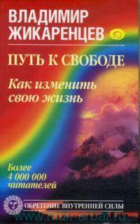
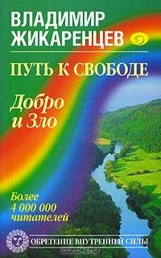
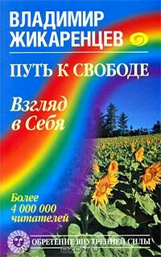
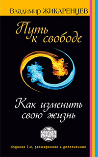

Библиотека
-

Кармические причины возникновения проблем
Первое издание книги - ноябрь, 1996г. В данной книге продолжается исследование строения и работы ума.
Если мы знаем, как устроен и работает ум, мы получаем в руки ключ над тем, что происходит с человеком в жизни и почему. -

Добро и зло – игра в дуальность
Первое издание книги - ноябрь, 1996г. В данной книге продолжается исследование строения и работы ума. Поскольку, как было показано в предыдущей книге Путь К Свободе. Кармические причины возникновения проблем или...
-

Взгляд в себя
Первое издание книги - октябрь, 1997г. Данная книга в основном посвящена рассмотрению психодинамики чакр - энергетических центров человека - и типам характера человека.
-

Аудиокнига. Путь к свободе. Как изменить свою жизнь
Первое издание книги - ноябрь, 1996г. В данной книге продолжается исследование строения и работы ума. Если мы знаем, как устроен и работает ум, мы получаем в руки ключ над тем, что происходит с человеком в жизни и почему.